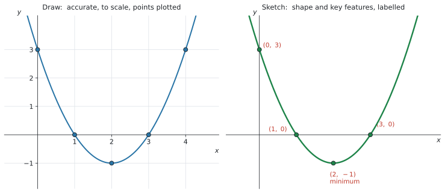
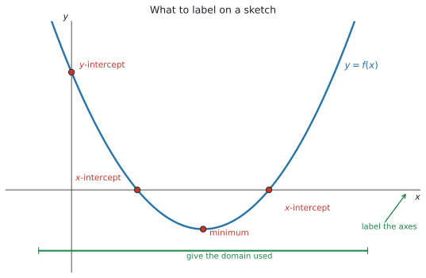
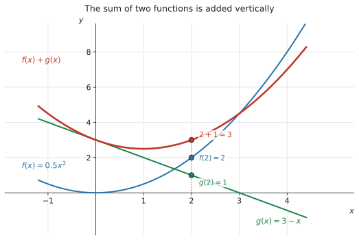

SL 2.3 — Graphs of functions（グラフをかく・読む）
- \(y = f(x)\) という書き方の意味が分かり、点がグラフの上にあるかを確かめられる。
DrawとSketchの違いを説明し、指示どおりにかき分けられる。- グラフに軸と key features のラベルを付けられる（ここが点になります）。
- 電卓の画面を見て、紙に写せる（transferring a graph from screen to paper）。
- 電卓で 2つの関数の和・差のグラフをかける。
- 文脈から、意味の通るグラフをかける。
公式集の Topic 2 の欄には、SL 2.1 と SL 2.5 の式しかありません。
SL 2.2 で見た Topic 2 全体の決めごとのうち、(2) と (3) がこの項目そのものです。
questions may be set requiring the graphing of functions that do not explicitly appear on the syllabus
… use technology such as graphing packages and graphing calculators … rather than using elaborate analytical techniques
知らない形の関数が出ても、電卓に入れればグラフが出ます。
The idea
1. \(y = f(x)\) とグラフ
グラフは、式を満たす点 \((x,\ y)\) を全部集めたものです。
\[ y = f(x) \]
\(f(x) = x^{2} - 4x + 3\) なら、\(x = 5\) を入れると \(f(5) = 25 - 20 + 3 = 8\)。ですから点 \((5,\ 8)\) はグラフの上にあります。
点がグラフ上にあるか確かめる
\(x\) 座標を式に入れて、\(y\) 座標と合うかを見るだけです。
| 点 | 計算 | 判定 |
|---|---|---|
| \((5,\ 8)\) | \(f(5) = 8\) | \(y\) 座標と一致 → 上にある |
| \((2,\ 1)\) | \(f(2) = -1\) | \(1\) と合わない → 上にない |
Show that the point lies on the graph と言われたら、この代入を1行書いてください。 「グラフを見たらそう見える」では点になりません。
2. Draw と Sketch の違い
シラバスが名指しで指定している項目です。
Students should be aware of the difference between the command terms “draw” and “sketch”.
IB の command term の定義は、次のとおりです。
Draw
Represent by means of a labelled, accurate diagram or graph, using a pencil. A ruler (straight edge) should be used for straight lines. Diagrams should be drawn to scale. Graphs should have points correctly plotted (if appropriate) and joined in a straight line or smooth curve.
Sketch
Represent by means of a diagram or graph (labelled as appropriate). The sketch should give a general idea of the required shape or relationship, and should include relevant features.

図 1 は、同じ関数を2通りにかいたものです。
Draw と Sketch
| Draw | Sketch | |
|---|---|---|
| 目盛り | 必要（正確な縮尺で） | なくてよい |
| 定規 | 直線には使う | 使わなくてよい |
| 点 | 正確にプロットする | 大事な点だけ |
| 求められているもの | 正確さ | 形と特徴 |
| ラベル | 必要 | 必要 |
Sketch でも、ラベルは必要です
「ざっとかけばいい」ではありません。
定義の中に labelled as appropriate と should include relevant features が入っています。形だけ合っていても、ラベルがなければ点になりません。
Plot は3つ目の言葉です
Plot は Mark the position of points on a diagram ── 「点の位置を印す」だけです。
\(3\) つとも別の指示なので、問題文の動詞をよく見てください。
3. 何にラベルを付けるか
シラバスの Guidance に、はっきり書かれています。
All axes and key features should be labelled.

チェックリストにしておきます。 図 2 を見ながら、\(1\) つずつ確かめてください。
| 何を | どう書くか |
|---|---|
| 軸の名前（axis labels） | \(x\)、\(y\)（文脈なら \(t\)、\(h\) など問題の文字で） |
| 軸の単位（units） | 時間なら (seconds)、お金なら ($) |
| \(y\)-intercept | 座標で \((0,\ 3)\) |
| \(x\)-intercept | 座標で \((1,\ 0)\)、\((3,\ 0)\) |
| maximum / minimum | 座標と、どちらかの語 |
| かいた範囲（domain） | \(-1 \leq x \leq 5\) など |
| 式（equation） | \(y = f(x)\) を曲線のそばに |
どの点が key feature なのかは、SL 2.4 で正式に扱います。シラバスにこう並んでいます。
Maximum and minimum values; intercepts; symmetry; vertex; zeros of functions or roots of equations; vertical and horizontal asymptotes
この項目では「軸と、目立つ点にラベルを付ける」ことを身につけてください。 何を探すかは SL 2.4 の話です。
4. 画面から紙へ写す
シラバスの Content 欄に、そのまま書かれています。
Creating a sketch from information given or a context, including transferring a graph from screen to paper.
電卓の画面と、答案の図は別物です。 画面をそのまま写すのではありません。
手順は4つです
- 電卓でグラフを出し、全体が見える大きさにする（Zoom - Fit）
- 大事な点の座標を、電卓で読む（切片、最大・最小）
- 紙に軸をかき、名前と単位を書く
- 形をかいて、読んだ座標をラベルとして書き込む
電卓の画面には、たまたまその窓に入っていた部分しか映っていません。
- 画面の外に続いている部分は、紙では続けてかく
- 画面の縦横の比は、紙では気にしなくてよい（Sketch の場合）
- 画面に出ている目盛りの数字を、そのまま写す必要はない
写すのは「形」と「大事な点の座標」です。画面の見た目ではありません。
\(0 \leq x \leq 5\) と指定されているのに、両側に伸ばしてかいてはいけません。
指定された範囲の端で線を止めて、端の点にも印を付けてください。SL 2.2 でやった domain の話が、そのまま図に出てきます。
5. 和と差のグラフ
シラバスの Content 欄に書かれています。
Using technology to graph functions including their sums and differences.
2つの関数を足したり引いたりしたグラフも、電卓でかけます。

図 3 は、\(f(x) = 0.5x^{2}\) と \(g(x) = 3 - x\)、そしてその和です。
\[ (f + g)(x) = f(x) + g(x) \tag{1}\]
やっていることは「縦に足す」だけです
\(x = 2\) のところを見てください。
\[ f(2) = 2, \qquad g(2) = 1, \qquad f(2) + g(2) = 3 \]
それぞれのグラフの高さを、その場所で足すと、和のグラフの高さになります。
引き算も同じです。\((f - g)(x) = f(x) - g(x)\) で、高さを引きます。
\(x = 4\) では \(g(4) = -1\) です。ですから、
\[ f(4) + g(4) = 8 + (-1) = 7 \]
足しているのに、\(f\) より下になります。「足す」ではなく「符号ごと足す」と思ってください。
Why it works
ここでは、なぜ和のグラフが「縦に足す」だけでできるのかを説明します。
グラフの上の点 \((x,\ y)\) で、\(y\) はその場所での高さです（図 3）。
\(f\) のグラフは、\(x\) のところで高さ \(f(x)\)。\(g\) のグラフは、同じ \(x\) のところで高さ \(g(x)\)。
そして和の関数は、定義そのものが
\[ (f + g)(x) = f(x) + g(x) \]
です。「その \(x\) での高さ」を足す、と定義されているのですから、グラフでも高さを足すことになります。
新しいことは何もしていません。 式 1 を図に翻訳しただけです。
だから、式がなくても和のグラフはかけます。 グラフが \(2\) 本与えられていれば、いくつかの \(x\) で高さを足して点を打ち、なめらかにつなげばよいのです。
Worked examples
問題文は英語です。意味が理解できなかったら、問題文の下の「日本語訳」を開いてください。解説は日本語です。
例題 1 A function is defined by \(f(x) = x^{2} - 4x + 3\).
(a) Show that the point \((5,\ 8)\) lies on the graph of \(y = f(x)\).
(b) Determine whether the point \((2,\ 1)\) lies on the graph of \(y = f(x)\).
日本語訳
関数が \(f(x) = x^{2} - 4x + 3\) で定められています。
(a) 点 \((5,\ 8)\) が \(y = f(x)\) のグラフ上にあることを示しなさい。
(b) 点 \((2,\ 1)\) が \(y = f(x)\) のグラフ上にあるかどうかを判定しなさい。
（lies on は「〜の上にある」です。）
(a) Show that なので、途中を全部書きます（代入して確かめる）。
\(x = 5\) を入れます。
\[ f(5) = 5^{2} - 4(5) + 3 = 25 - 20 + 3 = 8 \]
これが点の \(y\) 座標 \(8\) と一致したので、\((5,\ 8)\) はグラフ上にあります。
「一致したので上にある」という一文まで書いてください。 計算だけで止めると、示したことになりません。
(b) 同じように \(x = 2\) を入れます。
\[ f(2) = 2^{2} - 4(2) + 3 = 4 - 8 + 3 = -1 \]
\(-1 \neq 1\) なので、\((2,\ 1)\) はグラフ上にありません。
グラフ上にあるのは \((2,\ -1)\) のほうです。
(a) \(f(5) = 5^{2} - 4(5) + 3 = 8\)
This equals the \(y\)-coordinate, so \((5,\ 8)\) lies on the graph.
(b) \(f(2) = 2^{2} - 4(2) + 3 = -1\)
Since \(-1 \neq 1\), the point \((2,\ 1)\) does not lie on the graph.
例題 2 The function \(f\) is defined by \(f(x) = x^{2} - 4x + 3\) for \(-1 \leq x \leq 5\).
(a) Write down the coordinates of the \(y\)-intercept.
(b) Write down the coordinates of the two \(x\)-intercepts.
(c) Use your GDC to find the coordinates of the minimum point.
(d) Sketch the graph of \(y = f(x)\), labelling the axes and the points found above.
日本語訳
関数 \(f\) が、\(-1 \leq x \leq 5\) の範囲で \(f(x) = x^{2} - 4x + 3\) と定められています。
(a) \(y\) 切片の座標を書きなさい。
(b) \(2\) つの \(x\) 切片の座標を書きなさい。
(c) GDC を使って、最小点の座標を求めなさい。
(d) \(y = f(x)\) のグラフの概形をかき、軸と、上で求めた点にラベルを付けなさい。
(a) \(x = 0\) を入れます（SL 2.1 の intercept）。
\[ f(0) = 3 \quad \Rightarrow \quad (0,\ 3) \]
(b) \(y = 0\) になる \(x\) です。電卓のグラフで読みます（GDCの使い方）。
menu → Analyze Graph → Zero\[ (1,\ 0) \quad \text{と} \quad (3,\ 0) \]
(c) 谷の底を出します。
menu → Analyze Graph → Minimum\[ (2,\ -1) \]
(d) ラベルのチェックリストのとおりにかきます。できあがりは 図 1 の右の形です。
書き込むもの
- 軸に \(x\) と \(y\)
- \((0,\ 3)\)、\((1,\ 0)\)、\((3,\ 0)\)、\((2,\ -1)\) の4点
- 最小点には
minimumの語 - \(-1 \leq x \leq 5\) の範囲で止める ── 端は \(f(-1) = 8\) と \(f(5) = 8\) です
Sketch なので目盛りは要りません。 ただし上の4点のラベルは必要です（表 2）。
(a) \((0,\ 3)\)
(b) \((1,\ 0)\) and \((3,\ 0)\)
(c) \((2,\ -1)\)
(d) A parabola opening upwards, drawn only for \(-1 \leq x \leq 5\), with the \(x\)- and \(y\)-axes labelled and the points \((0,\ 3)\), \((1,\ 0)\), \((3,\ 0)\) and the minimum \((2,\ -1)\) marked.
例題 3 A student is asked to sketch the graph of \(f(x) = 3 - 0.5x^{2}\) for \(-4 \leq x \leq 4\). The student draws a curve of the correct shape but writes nothing else.
(a) State three things the student should have labelled.
(b) Find the coordinates of the maximum point.
(c) Find the \(x\)-intercepts, giving your answers correct to three significant figures.
日本語訳
ある生徒が、\(-4 \leq x \leq 4\) の範囲で \(f(x) = 3 - 0.5x^{2}\) のグラフの概形をかくよう言われました。形は正しい曲線をかきましたが、ほかには何も書きませんでした。
(a) この生徒がラベルを付けるべきだったものを \(3\) つ述べなさい。
(b) 最大点の座標を求めなさい。
(c) \(x\) 切片を、有効数字3桁で求めなさい。
(a) チェックリストから3つ挙げれば十分です。
試験ではこう書く
The \(x\)- and \(y\)-axes should be labelled; the maximum point should be labelled with its coordinates; the \(x\)-intercepts should be labelled with their coordinates.
（意味：\(x\) 軸と \(y\) 軸に名前を付ける。最大点に座標を書く。\(x\) 切片に座標を書く。）
シラバスの言葉は All axes and key features should be labelled です。 「軸」と「key features」の両方に触れてください。
(b) 電卓で Analyze Graph → Maximum（GDCの使い方）。
\[ (0,\ 3) \]
\(-0.5x^{2}\) の部分は必ず \(0\) 以下なので、\(x = 0\) のとき \(f\) が一番大きくなります。この形なら、電卓を使わなくても分かります。
(c) \(y = 0\) になる \(x\) です。Analyze Graph → Zero で読みます。
\[ x = \pm 2.449\ldots \]
\[ (-2.45,\ 0) \quad \text{と} \quad (2.45,\ 0) \qquad (3 \text{ s.f.}) \]
有効数字3桁を指定されているので、\(2.4\) や \(2.5\) では足りません。
(a) The \(x\)- and \(y\)-axes; the coordinates of the maximum point; the coordinates of the \(x\)-intercepts.
(b) \((0,\ 3)\)
(c) \((-2.45,\ 0)\) and \((2.45,\ 0)\) (3 s.f.)
例題 4 Two functions are defined by \(f(x) = 0.5x^{2}\) and \(g(x) = 3 - x\).
(a) Find \(f(2)\) and \(g(2)\).
(b) Hence write down the value of \((f + g)(2)\).
(c) Write down an expression for \((f + g)(x)\).
(d) Use your GDC to find the coordinates of the minimum point of \(y = (f + g)(x)\).
日本語訳
\(2\) つの関数が \(f(x) = 0.5x^{2}\)、\(g(x) = 3 - x\) で定められています。
(a) \(f(2)\) と \(g(2)\) を求めなさい。
(b) よって \((f + g)(2)\) の値を書きなさい。
(c) \((f + g)(x)\) を表す式を書きなさい。
(d) GDC を使って、\(y = (f + g)(x)\) の最小点の座標を求めなさい。
（expression は「式」です。= のない、\(x\) の式だけを書きます。）
(a) それぞれ代入します。
\[ f(2) = 0.5(2)^{2} = 2, \qquad g(2) = 3 - 2 = 1 \]
(b) Hence なので、(a) をそのまま使います（縦に足すだけ）。
\[ (f + g)(2) = 2 + 1 = 3 \]
新しく計算しないでください。 図 3 の \(x = 2\) のところが、この \(3\) です。
(c) 式どうしを足します。
\[ (f + g)(x) = 0.5x^{2} + (3 - x) = 0.5x^{2} - x + 3 \]
検算。 \(x = 2\) を入れると \(0.5(4) - 2 + 3 = 2 - 2 + 3 = 3\) ✓ (b) と合いました。
(d) f3(x) = 0.5x^2 - x + 3 を電卓に入れて（GDCの使い方）、
menu → Analyze Graph → Minimum\[ (1,\ 2.5) \]
f1(x) + f2(x) と入れても同じグラフが出ます。 電卓の中で足してくれるので、(c) の式を作らなくても (d) は答えられます。
(a) \(f(2) = 0.5(2)^{2} = 2\) and \(g(2) = 3 - 2 = 1\)
(b) \((f + g)(2) = 2 + 1 = 3\)
(c) \((f + g)(x) = 0.5x^{2} - x + 3\)
(d) \((1,\ 2.5)\)
例題 5 A ball is thrown upwards. Its height above the ground, in metres, after \(t\) seconds is given by
\[ h(t) = 20t - 5t^{2}, \qquad 0 \leq t \leq 4 \]
(a) Find the values of \(t\) for which the ball is at ground level.
(b) Find the maximum height of the ball and the time at which it occurs.
(c) Sketch the graph of \(h\) against \(t\), labelling the axes and the points found in (a) and (b).
(d) State the range of \(h\) in this context.
日本語訳
ボールを上に投げます。\(t\) 秒後の地面からの高さ（メートル）は次の式で表されます。
(a) ボールが地面の高さにある \(t\) の値を求めなさい。
(b) ボールの最高点の高さと、そのときの時刻を求めなさい。
(c) \(t\) に対する \(h\) のグラフの概形をかき、軸と、(a)(b) で求めた点にラベルを付けなさい。
(d) この文脈での \(h\) の range を述べなさい。
（at ground level は「地面の高さにある」、against は「〜に対して」です。横軸が \(t\)、縦軸が \(h\) になります。）
(a) 地面の高さ \(= 0\) なので、\(h(t) = 0\) を解きます。
menu → Analyze Graph → Zero\[ t = 0 \quad \text{と} \quad t = 4 \]
\(t = 0\) は投げた瞬間、\(t = 4\) は落ちてきた瞬間です。両方とも意味があります。
(b) Analyze Graph → Maximum。
\[ (2,\ 20) \]
答え方に注意してください。 「最高点の高さ」は \(20\) m、「そのときの時刻」は \(t = 2\) 秒です。座標のまま \((2, 20)\) と書くだけでは、聞かれたことに答えていません。
(c) 画面から紙へ写します。
軸の名前を、問題の文字と単位で書きます。
- 横軸 … \(t\) (seconds)
- 縦軸 … \(h\) (metres)
そして \((0,\ 0)\)、\((4,\ 0)\)、\((2,\ 20)\) の3点にラベルを付けます。最高点には maximum と書き添えてください。
\(0 \leq t \leq 4\) の外はかきません。 \(t < 0\)（投げる前）も \(t > 4\)（地面より下）も、意味がないからです。
(d) in this context なので、現実の範囲です（SL 2.2）。
\[ 0 \leq h(t) \leq 20 \]
地面（\(0\) m）から最高点（\(20\) m）までです。
(a) \(t = 0\) and \(t = 4\) seconds
(b) The maximum height is \(20\) m, at \(t = 2\) seconds.
(c) A curve from \((0,\ 0)\) up to the maximum \((2,\ 20)\) and back down to \((4,\ 0)\), drawn only for \(0 \leq t \leq 4\), with the horizontal axis labelled \(t\) (seconds) and the vertical axis labelled \(h\) (metres).
(d) \(0 \leq h(t) \leq 20\)
Common errors
Sketch でラベルを何も書かない
この項目で一番点を落とすところです。
Sketch の定義に labelled as appropriate と入っています。形だけでは点になりません。
軸の名前、切片、最大・最小。 この3つを書く習慣を付けてください。
Draw なのに目盛りをかかない
Draw は accurate、to scale、ruler が定義に入っています。
方眼と目盛りが必要です。フリーハンドの概形では足りません。
文脈のある問題では、\(t\) (seconds)、\(h\) (metres)、\(C\) ($) のように単位まで書きます。
文字だけでは、何のグラフか伝わりません。
\(0 \leq t \leq 4\) なら、\(t = 4\) で線を止めます。
伸ばしてかくと、「地面より下にもぐったボール」をかいたことになります。意味を考えてください。
画面には、たまたまその窓に入った部分が映っているだけです。
写すのは形と、大事な点の座標だけです。画面の枠や目盛りの数字ではありません。
必ず \((x,\ y)\) の順です。最小点は \((2,\ -1)\) であって \((-1,\ 2)\) ではありません。
文脈のある問題では \((t,\ h)\) の順、つまり横軸のほうが先です。
「高さを求めよ」なら \(20\) m、「時刻も」なら \(t = 2\) 秒。
聞かれた形で答えてください。 座標を書くだけでは、答えたことになりません。
\((f+g)(x)\) は、\(2\) つの高さを足したものです。あいだでも平均でもありません。
\(f(2) = 2\)、\(g(2) = 1\) なら、和は \(3\)（図 3）。\(2\) 本より上に来ます（どちらも正のとき）。
Using your GDC (TI-Nspire CX II)
この項目は、電卓の画面を答案に写すところまでが中身です。
グラフを出す
ctrl + doc → 2: Add Graphsf1(x) = に式を入れます。
f1(x) = x^2 - 4x + 3全体が見える大きさにする
まずこれをやってください。 画面に入っていないものは、読めません。
menu → Window/Zoom → Zoom - Fitうまくいかないときは、Window Settings で \(x\) と \(y\) の範囲を手で入れます。問題の domain に合わせるのが早いです。
大事な点を読む
menu → Analyze Graph → Zero （x 切片）
menu → Analyze Graph → Minimum （最小点）
menu → Analyze Graph → Maximum （最大点）左と右の境目を指定すると、その区間の中の1つを出してくれます。\(x\) 切片が \(2\) つあるときは、\(2\) 回に分けて読んでください。
境目は lower bound? と upper bound? の \(2\) 回聞かれます。enter を \(2\) 回押してください（→ SL 2.4）。
\(y\) 切片は、\(x = 0\) を式に代入するほうが速いことが多いです。
和と差のグラフ
式を作らなくても、電卓の中で足せます。
f1(x) = 0.5x^2
f2(x) = 3 - x
f3(x) = f1(x) + f2(x)f3 に f1(x) + f2(x) と打つだけです。引き算なら f1(x) - f2(x)。
3本が同時に表示されるので、図 3 のように縦に足されていることが目で確かめられます。
グラフの式のところで enter の前にチェックを外すか、f1 の行を選んで非表示にできます。
3本が重なって見づらいときは、\(1\) 本ずつ見てください。
表で値を確かめる
ctrl + Tグラフの横に値の表が出ます。和のグラフが本当に「足したもの」になっているかを、いくつかの \(x\) で確かめられます。
画面から紙へ
この順番でやってください。
- Zoom - Fit で全体を見る
- Analyze Graph で大事な点の座標を読み、メモする
- 紙に軸をかき、名前と単位を書く
- 形をかき、メモした座標をラベルとして書き込む
電卓を見ながら紙に写すのではなく、「数字を先に読んでから、紙にかく」のがこつです。そのほうが、ラベルの書き忘れが減ります。
Exercises
各問題に、折りたたみが3つ付いています。日本語訳、解答例（答案用紙に書くべきこと。英語です）、解説（なぜそうなるか。日本語です）。
まず自分で解いて、次に解答例と見くらべてください。解説は、合わなかったときだけ開けば十分です。
1 A function is defined by \(f(x) = x^{2} - 6x + 8\).
(a) Show that the point \((5,\ 3)\) lies on the graph of \(y = f(x)\).
(b) Determine whether the point \((1,\ 2)\) lies on the graph.
日本語訳
関数が \(f(x) = x^{2} - 6x + 8\) で定められています。
(a) 点 \((5,\ 3)\) が \(y = f(x)\) のグラフ上にあることを示しなさい。
(b) 点 \((1,\ 2)\) がグラフ上にあるかどうかを判定しなさい。
(a) \(f(5) = 5^{2} - 6(5) + 8 = 3\)
This equals the \(y\)-coordinate, so \((5,\ 3)\) lies on the graph.
(b) \(f(1) = 1 - 6 + 8 = 3\)
Since \(3 \neq 2\), the point \((1,\ 2)\) does not lie on the graph.
やることは代入だけです（表 1）。
(a) \(25 - 30 + 8 = 3\)。点の \(y\) 座標と一致しました。
Show that なので、「一致したから上にある」という一文まで書いてください。 計算で止めないように。
(b) \(f(1) = 3\) です。\((1,\ 3)\) ならグラフ上にありますが、\((1,\ 2)\) は違います。
惜しい形の点が出されるのがこの問題の型です。必ず計算して確かめてください。
2 State two differences between the command terms Draw and Sketch.
日本語訳
command term の Draw と Sketch の違いを \(2\) つ述べなさい。
(1) A drawing must be accurate and to scale, with points correctly plotted, while a sketch only needs to show the general shape.
(2) A ruler should be used for straight lines when drawing, but a sketch may be done freehand.
2つの定義から選べば十分です。
使える違いは、たとえば次のとおりです。
- 正確さ … Draw は
accurate、to scale。Sketch はgeneral idea of the required shape - 道具 … Draw は
ruler（直線に）。Sketch はフリーハンドでよい - 点 … Draw は
correctly plotted。Sketch は大事な点だけ
「ラベル」は違いになりません。 どちらもラベルが必要だからです。ここを違いとして書くと、逆に減点されかねません。
3 The graph of \(y = f(x)\) passes through the point \((3,\ -2)\).
(a) Write down the value of \(f(3)\).
(b) Find the coordinates of the point where the graph of \(y = 4 - 2x\) crosses the \(x\)-axis.
日本語訳
\(y = f(x)\) のグラフは点 \((3,\ -2)\) を通ります。
(a) \(f(3)\) の値を書きなさい。
(b) \(y = 4 - 2x\) のグラフが \(x\) 軸と交わる点の座標を求めなさい。
(a) \(f(3) = -2\)
(b) \(4 - 2x = 0\), so \(x = 2\). The point is \((2,\ 0)\).
(a) 「\((3,\ -2)\) を通る」は「\(f(3) = -2\)」と同じことを言っています（グラフと式）。計算はいりません。
(b) \(x\) 軸との交点は \(y = 0\) のところです（SL 2.1 の intercept）。
\[4 - 2x = 0 \quad \Rightarrow \quad x = 2\]
coordinates と聞かれているので、\((2,\ 0)\) と書いてください。\(2\) だけでは足りません。
4 The function \(f\) is defined by \(f(x) = x^{2} + 2x - 8\) for \(-5 \leq x \leq 3\).
(a) Write down the \(y\)-intercept.
(b) Use your GDC to find the \(x\)-intercepts and the minimum point.
(c) State the range of \(f\).
日本語訳
関数 \(f\) が、\(-5 \leq x \leq 3\) の範囲で \(f(x) = x^{2} + 2x - 8\) と定められています。
(a) \(y\) 切片を書きなさい。
(b) GDC を使って、\(x\) 切片と最小点を求めなさい。
(c) \(f\) の range を述べなさい。
(a) \((0,\ -8)\)
(b) \(x\)-intercepts: \((-4,\ 0)\) and \((2,\ 0)\). Minimum: \((-1,\ -9)\).
(c) \(f(-5) = 7\) and \(f(3) = 7\), so the range is \(-9 \leq f(x) \leq 7\)
(a) \(f(0) = -8\)。
(b) Analyze Graph → Zero を2回（\(x\) 切片が2つあるので）、Minimum を1回。
(c) range は縦の広がりです（SL 2.2）。谷と、両端の3つを調べます。
- 谷 … \(-9\)
- 左端 … \(f(-5) = 25 - 10 - 8 = 7\)
- 右端 … \(f(3) = 9 + 6 - 8 = 7\)
\[-9 \leq f(x) \leq 7\]
両端がたまたま同じ値 \(7\) になりました。\(-1\) を中心に左右対称だからです。
5 Two functions are defined by \(f(x) = x^{2}\) and \(g(x) = 2x + 3\).
(a) Find \(f(2)\) and \(g(2)\).
(b) Hence write down \((f + g)(2)\).
(c) Write down an expression for \((f + g)(x)\).
日本語訳
\(2\) つの関数が \(f(x) = x^{2}\)、\(g(x) = 2x + 3\) で定められています。
(a) \(f(2)\) と \(g(2)\) を求めなさい。
(b) よって \((f + g)(2)\) を書きなさい。
(c) \((f + g)(x)\) を表す式を書きなさい。
(a) \(f(2) = 4\) and \(g(2) = 7\)
(b) \((f + g)(2) = 4 + 7 = 11\)
(c) \((f + g)(x) = x^{2} + 2x + 3\)
(a) \(2^2 = 4\)、\(2(2) + 3 = 7\)。
(b) Hence なので(a) を足すだけです（縦に足す）。\(4 + 7 = 11\)。
(c) 式どうしを足します。\(x^2 + (2x + 3) = x^2 + 2x + 3\)。
検算。 \(x = 2\) を入れると \(4 + 4 + 3 = 11\) ✓ (b) と合いました。
この検算を必ずやってください。 (b) と (c) が合わなければ、どちらかが間違っています。
6 Two functions are defined by \(f(x) = 3x + 1\) and \(g(x) = x^{2} - 4\).
(a) Find \((f - g)(3)\).
(b) Write down an expression for \((f - g)(x)\).
日本語訳
\(2\) つの関数が \(f(x) = 3x + 1\)、\(g(x) = x^{2} - 4\) で定められています。
(a) \((f - g)(3)\) を求めなさい。
(b) \((f - g)(x)\) を表す式を書きなさい。
(a) \(f(3) = 10\) and \(g(3) = 5\), so \((f - g)(3) = 10 - 5 = 5\)
(b) \((f - g)(x) = (3x + 1) - (x^{2} - 4) = -x^{2} + 3x + 5\)
(a) \(f(3) = 9 + 1 = 10\)、\(g(3) = 9 - 4 = 5\)。引いて \(5\)。
引く順番に注意してください。 \((f - g)\) なので \(f\) から \(g\) を引きます。 \(g - f\) にすると \(-5\) になってしまいます。
(b) カッコを付けて引くのが要です。
\[(3x + 1) - (x^{2} - 4) = 3x + 1 - x^{2} + 4 = -x^{2} + 3x + 5\]
\(-(-4) = +4\) です。カッコを外すときに符号が全部変わります。ここが一番間違えやすいところです。
検算。 \(x = 3\) を入れると \(-9 + 9 + 5 = 5\) ✓ (a) と合いました。
7 State four things that should be shown when transferring a graph from your GDC screen to paper.
日本語訳
GDC の画面から紙にグラフを写すとき、示すべきことを \(4\) つ述べなさい。
（transferring は「写すこと」です。）
(1) Both axes, labelled with the correct variables and units.
(2) The general shape of the curve.
(3) The coordinates of the intercepts.
(4) The coordinates of any maximum or minimum points.
チェックリストから4つ挙げれば十分です。
シラバスの言葉は All axes and key features should be labelled。ですから、「軸」と「key features」の両方に触れてください。
ほかに使えるもの：
- かいた範囲（domain）を示す
- 曲線のそばに \(y = f(x)\) と書く
「きれいにかく」「定規を使う」は違います。 写すのは sketch なので、求められているのは正確さではなく、情報が全部そろっていることです。
8 A tank contains \(60\) litres of water and is drained at a constant rate. The volume, in litres, after \(t\) minutes is given by
\[ V(t) = 60 - 4t, \qquad 0 \leq t \leq 15 \]
(a) Write down the volume of water at the start.
(b) Show that the tank is empty at \(t = 15\).
(c) Sketch the graph of \(V\) against \(t\), labelling the axes and both intercepts.
日本語訳
あるタンクに \(60\) リットルの水が入っていて、一定の速さで抜かれます。\(t\) 分後の量（リットル）は次の式で表されます。
(a) はじめの水の量を書きなさい。
(b) \(t = 15\) でタンクが空になることを示しなさい。
(c) \(t\) に対する \(V\) のグラフの概形をかき、軸と \(2\) つの切片にラベルを付けなさい。
(a) \(V(0) = 60\) litres
(b) \(V(15) = 60 - 4(15) = 60 - 60 = 0\), so the tank is empty.
(c) A straight line from \((0,\ 60)\) down to \((15,\ 0)\), drawn only for \(0 \leq t \leq 15\), with the horizontal axis labelled \(t\) (minutes) and the vertical axis labelled \(V\) (litres).
(a) はじめは \(t = 0\)。\(V(0) = 60\)。単位（リットル）を付けてください。
(b) Show that なので、代入して \(0\) になることを書きます。
\[60 - 4(15) = 60 - 60 = 0\]
「グラフを見ると \(0\) です」では点になりません。
(c) 直線です。 \(V(t) = 60 - 4t\) は SL 2.1 の \(y = mx + c\) の形で、傾き \(-4\)、\(V\) 切片 \(60\)。
軸には単位まで書きます。\(t\) (minutes)、\(V\) (litres)。
\(0 \leq t \leq 15\) の外はかきません。 \(t > 15\) に伸ばすと「水の量が負」になってしまいます。
9 A student sketches a graph with the correct shape, but does not label the axes and does not mark any points. The student says: “The shape is right, so the sketch is fine.”
Explain why the student would still lose marks.
日本語訳
ある生徒が、正しい形のグラフの概形をかきましたが、軸にラベルを付けず、点にも印を付けませんでした。その生徒は「形が合っているから、この概形で問題ない」と言っています。
この生徒が、それでも点を失う理由を説明しなさい。
（本書オリジナルの問題です。）
The command term “sketch” requires the graph to be labelled as appropriate and to include the relevant features, not only the correct shape.
Without labelled axes it is not clear what the graph represents, and without the intercepts and the maximum or minimum point there is no evidence that these values were found. Marks are given for these features, so they would be lost.
この項目の一番大事な考え方です。
Sketch の定義には、次の \(2\) つが入っています。
labelled as appropriateshould include relevant features
つまり形だけでは、定義を満たしていません。
採点する側から見ると、こうなります。
- 軸にラベルがない → 何のグラフか分からない
- 切片や最大・最小に印がない → その値を求めた証拠がない
点は「求めたことが伝わったところ」に付きます。 頭の中で分かっていても、紙に書いていなければ伝わりません。
「形」「軸」「点」の3つがそろって、はじめて sketch です。
10 A ball is thrown upwards from the ground. Its height above the ground, in metres, after \(t\) seconds is
\[ h(t) = 12t - 3t^{2}, \qquad 0 \leq t \leq 4 \]
(a) Write down the values of \(t\) at which the ball is at ground level.
(b) Find the maximum height of the ball and the time at which it occurs.
(c) Sketch the graph of \(h\) against \(t\), labelling the axes and the three points found in (a) and (b).
(d) State the range of \(h\) in this context.
(e) A second ball rises so that its height is given by \(g(t) = 4t\). Find \((h - g)(1)\) and interpret this value in context.
日本語訳
ボールを地面から上に投げます。\(t\) 秒後の地面からの高さ（メートル）は次のとおりです。
(a) ボールが地面の高さにある \(t\) の値を書きなさい。
(b) ボールの最高点の高さと、そのときの時刻を求めなさい。
(c) \(t\) に対する \(h\) のグラフの概形をかき、軸と、(a)(b) で求めた \(3\) 点にラベルを付けなさい。
(d) この文脈での \(h\) の range を述べなさい。
(e) \(2\) つ目のボールは、高さが \(g(t) = 4t\) で表されるように上がります。\((h - g)(1)\) を求め、その値の意味を文脈の中で説明しなさい。
(a) \(t = 0\) and \(t = 4\) seconds
(b) The maximum height is \(12\) m, at \(t = 2\) seconds.
(c) A curve from \((0,\ 0)\) up to the maximum \((2,\ 12)\) and back down to \((4,\ 0)\), drawn only for \(0 \leq t \leq 4\), with the horizontal axis labelled \(t\) (seconds) and the vertical axis labelled \(h\) (metres).
(d) \(0 \leq h(t) \leq 12\)
(e) \(h(1) = 9\) and \(g(1) = 4\), so \((h - g)(1) = 5\).
After \(1\) second the first ball is \(5\) metres higher than the second ball.
(a) Analyze Graph → Zero で \(t = 0\) と \(t = 4\)。手でもできます。
\[12t - 3t^{2} = 3t(4 - t) = 0 \quad \Rightarrow \quad t = 0,\ 4\]
(b) Analyze Graph → Maximum で \((2,\ 12)\)。
答え方：高さは \(12\) m、時刻は \(t = 2\) 秒。聞かれた形で書いてください。
(c) 画面から紙へ。軸は \(t\) (seconds) と \(h\) (metres)、点は \((0,\ 0)\)、\((2,\ 12)\)、\((4,\ 0)\)。最高点には maximum と書き添えます。
(d) 地面から最高点まで。\(0 \leq h(t) \leq 12\)。
(e) それぞれ代入して引きます（差は縦に引く）。
\[h(1) = 12 - 3 = 9, \qquad g(1) = 4\]
\[(h - g)(1) = 9 - 4 = 5\]
interpret があるので、言葉が必要です。\(5\) は \(2\) つのボールの高さの差、つまり「\(1\) 秒後に \(1\) つ目のボールが \(5\) m 高いところにいる」という意味です。
単位（メートル）と、どちらが高いのかを書いてください。「\(5\) です」では点になりません。